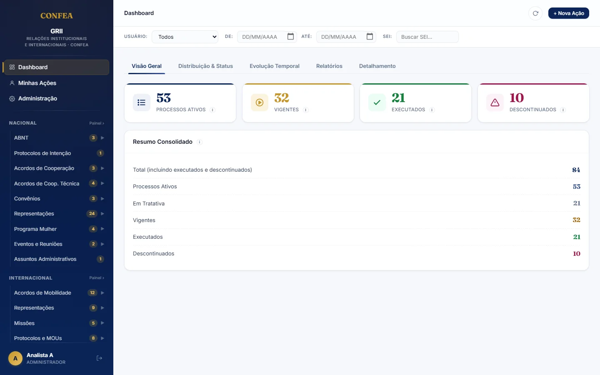
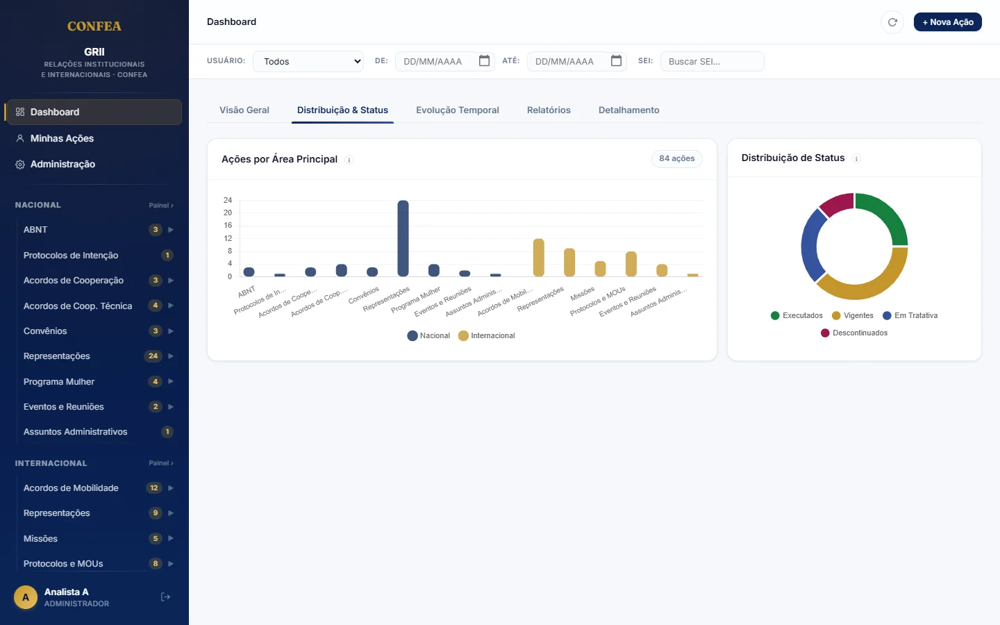
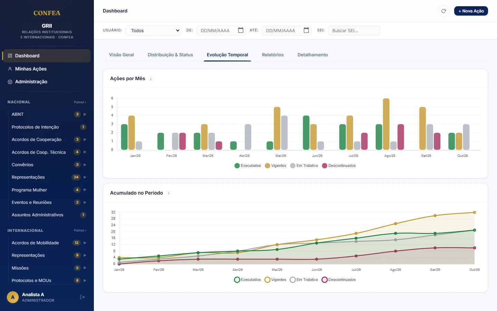
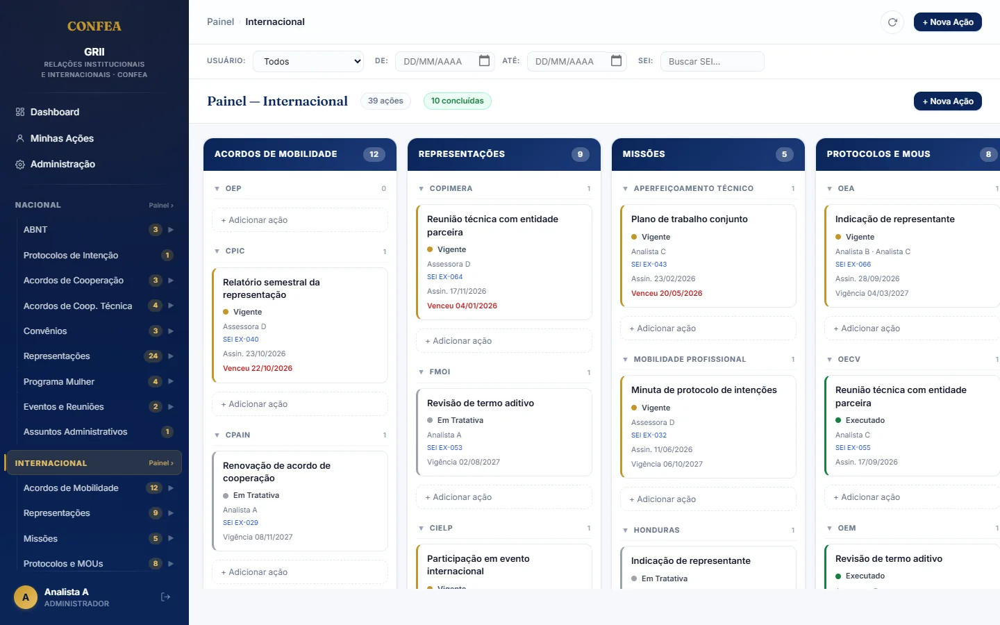
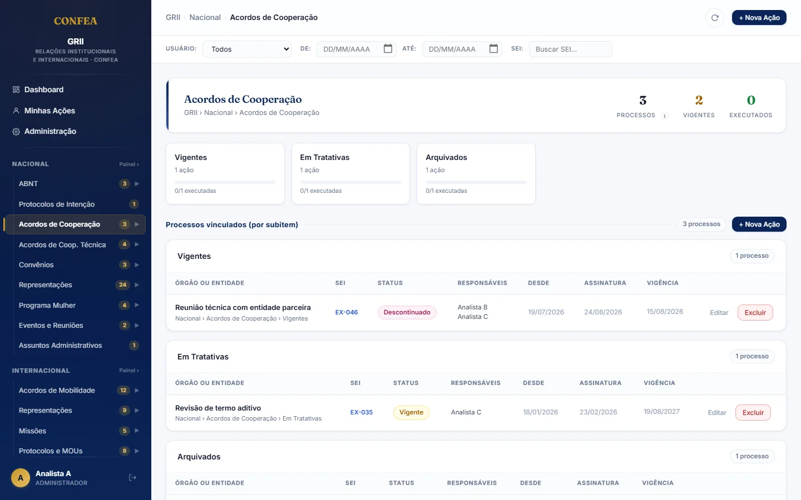
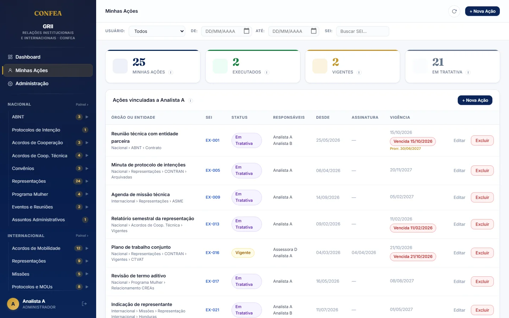

PortfólioSistemas e plataformas
Planner de relações institucionais e internacionais
Planner e painel da área de relações institucionais e internacionais do CONFEA. Cada acordo, representação, missão ou evento é uma ação com número do processo eletrônico, responsáveis, datas e situação.
- Instituição
- CONFEA
- Formato
- Página única
- Dados
- Supabase, por funções do banco
- Versões
- 11
79áreas de trabalho na árvore
2seções: Nacional e Internacional
4situações de cada ação
5abas no painel
Telas
Painel real com respostas do banco trocadas por dados fictícios.












Organização
Raiz
Gerênciaárvore de 108 nós
Seção
Nacionalacordos, convênios, representações, Programa Mulher, eventos
Internacionalmobilidade, representações, missões, protocolos, eventos
Área
Acordos de mobilidadepor país e entidade
Representaçõesvigentes e arquivadas
Missõestécnicas e de representação
Folha
Açãotítulo, processo, responsáveis, início, assinatura, vigência, prorrogação
79 folhas recebem ações. Os contadores da barra lateral somam as ações de cada ramo.
Situação de uma ação
Início
Em tratativasem assinatura
Vigência
Vigentealerta a 30 dias do fim; prorrogação registrada
Fim
Executado
Descontinuado
Funcionalidades
- FiltrosResponsável, período e número do processo, válidos em todas as telas.
- Painel5 abas: visão geral, distribuição, evolução no tempo, relatórios e detalhamento.
- RelatóriosTempo médio do início até a assinatura, por seção, e processos vigentes hoje.
- MobilidadeMódulo de remessas e requerimentos, com importação colada da planilha.
- PerfisAdministrador e operacional; exclusão de ação por pedido com aprovação.
Tecnologias
PythonHTMLJavaScriptChart.jsSupabasePostgreSQL